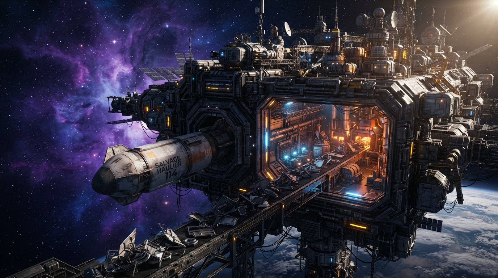
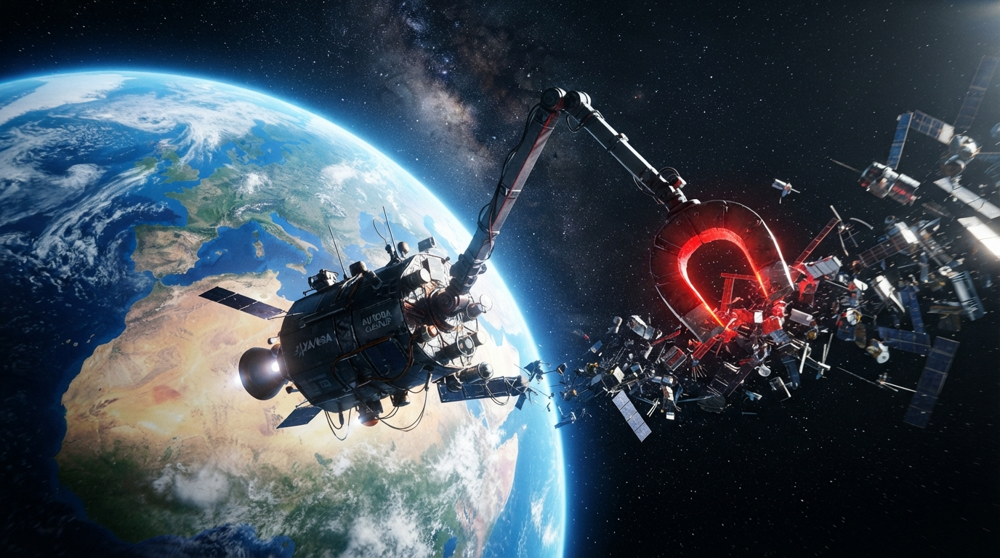
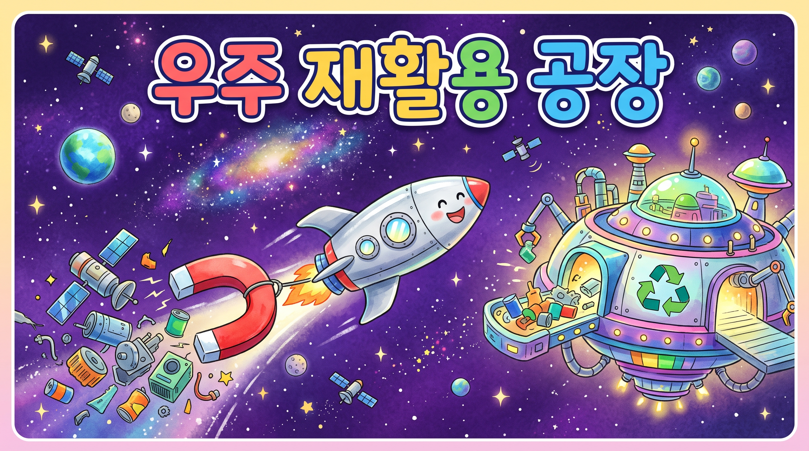
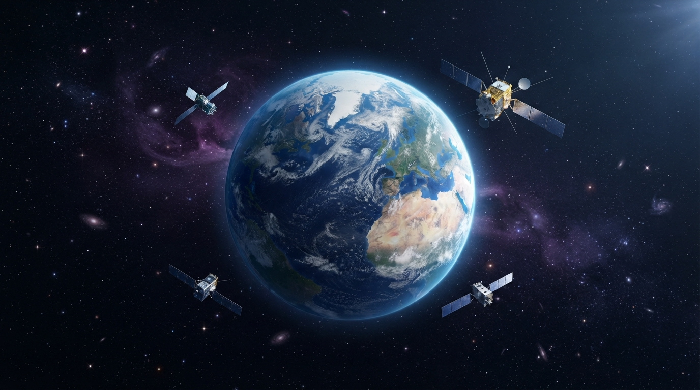
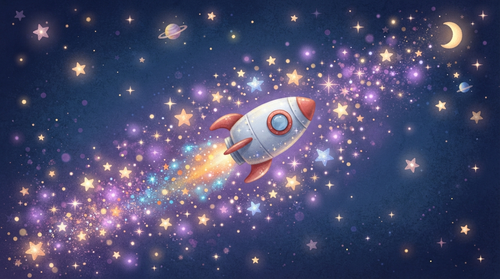

우주쓰레기를 다시 연료로!
03조 우주 지킴이
| 크기 | 조각 수 | 위성에 부딪치면? |
|---|---|---|
| 10cm보다 큰 조각 | 약 34,000개 | 위성을 통째로 부술 수 있어요 |
| 1cm~10cm 조각 | 약 900,000개 | 위성을 크게 다치게 해요 |
| 1cm보다 작은 조각 | 약 1억 3,000만개 | 작아도 금을 내고 멈추게 해요 |
작을수록 훨씬 많아서, 잡기가 더 어려워요.
출처: 유럽 우주국(ESA)이 관측해 추산한 수예요.
130,000,000
매일 새로운 조각이 생겨나고 있어요.
그래서 지금 우리가 멈춰야 해요!
(늘어나는 모습을 보여주는 숫자예요)
쓰레기를 다시 쓸 수 있다면
우주도 깨끗해지고 자원도 아낄 수 있어요.
우리가 어떻게 하면 우주쓰레기를
다시 연료로 바꿀 수 있을까?
우주 재활용 공장은 버려진 우주쓰레기를
모아서 다시 연료로 만드는 캠페인이에요.

우주쓰레기의 알루미늄을 가루로 만들어
가열해서 다지면, 로켓에 쓰는 고체 연료가 돼요!
쓰레기가 다시 힘을 내는 거예요!
(알루미늄 가루는 실제로 로켓 연료의 재료로 쓰여요)
자석 팔로 우주쓰레기를
척! 잡아오는 우주선


우주쓰레기가 연료가 되는 모습을 담았어요!
우리도 오늘부터 실천해요!
관객 친구가 직접 버튼을 눌러 보세요!
문제 1 / 3
우주 재활용 공장이 계속 일한다면
우주가 깨끗해질 거예요.
2035년의 뉴스를
만나 볼까요?
“우주쓰레기가 거의 사라졌다!”
우주 재활용 공장이 쓰레기를 연료로 바꿔서,
밤하늘의 별이 더 또렷하게 보여요.
— 오늘의 머리기사 —

우리의 우주는,
오늘보다 더 빛날 거예요.
✦ ✦ ✦
03조 우주 지킴이
우주를 지키는 건, 바로 우리예요!
들어 주셔서 고맙습니다!
